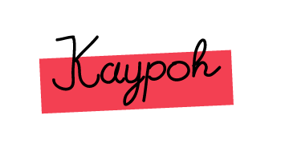

PERIHALKAYPOH
Program penganalisis minat tweet pengguna twitter.
Bimo Aryo Tyasono
Saat pertama muncul di Dunia ini, ia berada di Jakarta tepatnya pada tanggal 7 Juni 1996. Sekarang sedang menempuh pendidikan tinggi di jurusan Teknik Informatika Institut Teknologi Bandung.

Fiqie Ulya Sidiastahta
Pria muda bertalenta yang satu ini adalah seorang mahasiswa jurusan Informatika Institut Teknologi Bandung. Bersama dengan satu orang temannya yang seangkatan, ia juga masih merupakan mahasiswa di UDINUS. Saat ini sedang menjalani kesibukan sebagai calon anggota Unit Amateur Radio Club.
Twitter Facebook